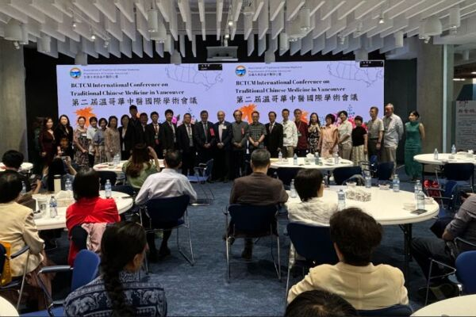
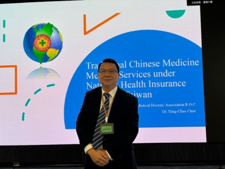
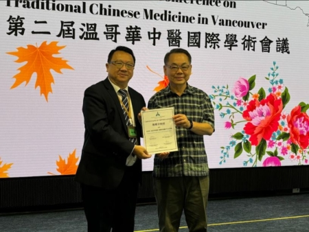
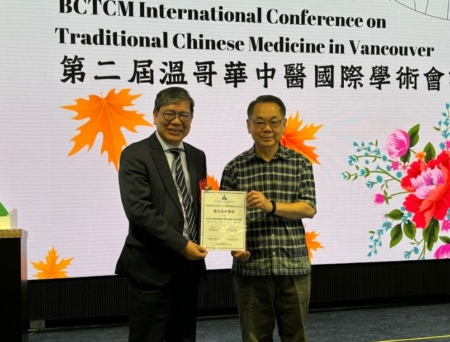
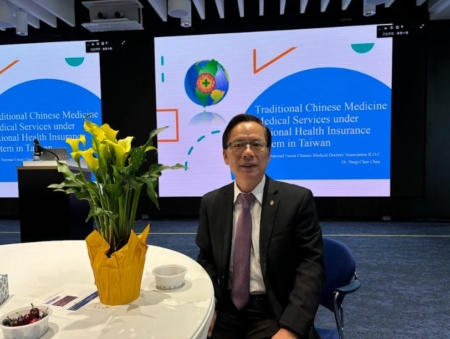

2024年8月3日，第二届温哥华国际中医学术会议在卑诗理工学院举行。（高晓雯／） 【2024年08月06日讯】（记者高晓雯加拿大温哥华采访报导）8月3日，第二届温哥华国际中医学术会议在卑诗理工学院(BCIT)拉开序幕。来自加拿大、中港台、英国等地的中医专家、学者及中医爱好者共同分享了中医领域的最新研究成果和临床经验。
在为期两天的研讨会中，专家们共同探讨中医理论、针灸、中药、针灸美容等领域在国际的未来发展。
加拿大卑诗中医师公会理事长朱国项在开幕式上感谢来自世界各地的16位专家学者参与本届学术交流。执行理事长张汉英在接受记者采访时表示：“这是一个跨地域的交流，同时也可以提高我们本地中医的临床水平，提供一个经验交流、互相合作、学习交流的平台。”
省议员姚君宪在开幕式表示，省政府近日在昆特兰理工大学开设加拿大首个中医学士学位，他说：“其实中医传统医学在这里不单是我们中国人几千年的文化精华，同时也是我们现代医学不可或缺的一部分。”
来自台湾的陈潮宗医师认为在公立大学设置中医学位，具有里程碑的意义。他认为国家愿意培养中医人才是非常重要的，2023年台湾公立大学阳明交通大学正式成立中医系，今年8月1号正式开课，“这是我们中医界非常重视的一个问题，因为国家级的人才培养，代表这是永续经营”，“如果能够有人才的培养，保险的支持，那整个产业就有很大的发展。”
列治文议员区泽光说：“我们都知道西方医学也有很多不足之处，加拿大是一个兼容的国家，所以我们能接受很多不同医疗的服务，这个对我们健康来讲是非常好的事情。”
台湾中医师公会联和会理事长詹永兆与另外7位医师也应邀参与本届国际会议。
台湾中医师公会联和会理事长詹永兆指出，在台湾一些感染过COVID-19的患者罹患后遗症，“用中医来调理，疗效非常好”，受到各界的肯定。
詹理事说过去两年，在台湾看中医的人次增加到1000万，中医在台湾的发展越来越完善。“希望将我们台湾中西合作的经验，带给卑诗省的中医师一个经验分享。期盼未来我们中医在所有人的努力之下，让民众越来越了解中医，越来越喜欢中医。其实中医，作为天然产品来讲，民众认为是副作用少，所以我们期盼，卑诗省的中医能早日纳入国家的健保体系，可以照顾更多的民众。”
驻温哥华台北经文处副处长邱建义接受记者采访表示，台湾在2019年实施中医药发展法。“也是因为这样一个法律的制定确定了国家中医药发展的一个基本原则，致力于促进中医药的创新跟研究，以及中医药多元跟永续发展。”他认为，卑诗省可藉鉴这一方法，以立法的方式来促进中医药在该省更加广泛多元的发展，以造福卑诗省的民众。
温哥华第一代中医师彭德坤感谢卑诗中医公会：“公会致力于提高加拿大中医执业者的学术水平，和临床实践的经验。”她感谢省市议员，专家和媒体，对中医的发展大力的支持。她相信卑诗省的中医会越来越强，越来越好。◇
责任编辑：李盈

2024年8月3日，第二届温哥华国际中医学术会议在卑诗理工学院举行。（高晓雯／） 【2024年08月06日讯】（记者高晓雯加拿大温哥华采访报导）8月3日，第二届温哥华国际中医学术会议在卑诗理工学院(BCIT)拉开序幕。来自加拿大、中港台、英国等地的中医专家、学者及中医爱好者共同分享了中医领域的最新研究成果和临床经验。
在为期两天的研讨会中，专家们共同探讨中医理论、针灸、中药、针灸美容等领域在国际的未来发展。
加拿大卑诗中医师公会理事长朱国项在开幕式上感谢来自世界各地的16位专家学者参与本届学术交流。执行理事长张汉英在接受记者采访时表示：“这是一个跨地域的交流，同时也可以提高我们本地中医的临床水平，提供一个经验交流、互相合作、学习交流的平台。”
省议员姚君宪在开幕式表示，省政府近日在昆特兰理工大学开设加拿大首个中医学士学位，他说：“其实中医传统医学在这里不单是我们中国人几千年的文化精华，同时也是我们现代医学不可或缺的一部分。”

台湾中医师公会全国联合理事陈潮宗出席第二届温哥华国际中医学术会议。（高晓雯／）
来自台湾的陈潮宗医师认为在公立大学设置中医学位，具有里程碑的意义。他认为国家愿意培养中医人才是非常重要的，2023年台湾公立大学阳明交通大学正式成立中医系，今年8月1号正式开课，“这是我们中医界非常重视的一个问题，因为国家级的人才培养，代表这是永续经营”，“如果能够有人才的培养，保险的支持，那整个产业就有很大的发展。”

列治文议员区泽光（右）颁发议长、省议员联名签署的贺函。左为台湾中医师公会全国联合理事陈潮宗。（高晓雯／）
列治文议员区泽光说：“我们都知道西方医学也有很多不足之处，加拿大是一个兼容的国家，所以我们能接受很多不同医疗的服务，这个对我们健康来讲是非常好的事情。”

列治文市议员区泽光（右）颁发议长、省议员联名签署的贺函。左为台湾中医师公会全国联合理事长詹永兆。（高晓雯／）
台湾中医师公会联和会理事长詹永兆与另外7位医师也应邀参与本届国际会议。
台湾中医师公会联和会理事长詹永兆指出，在台湾一些感染过COVID-19的患者罹患后遗症，“用中医来调理，疗效非常好”，受到各界的肯定。
詹理事说过去两年，在台湾看中医的人次增加到1000万，中医在台湾的发展越来越完善。“希望将我们台湾中西合作的经验，带给卑诗省的中医师一个经验分享。期盼未来我们中医在所有人的努力之下，让民众越来越了解中医，越来越喜欢中医。其实中医，作为天然产品来讲，民众认为是副作用少，所以我们期盼，卑诗省的中医能早日纳入国家的健保体系，可以照顾更多的民众。”

驻温哥华台北经文处副处长邱建义出席第二届温哥华国际中医学术会议。（高晓雯／）
驻温哥华台北经文处副处长邱建义接受记者采访表示，台湾在2019年实施中医药发展法。“也是因为这样一个法律的制定确定了国家中医药发展的一个基本原则，致力于促进中医药的创新跟研究，以及中医药多元跟永续发展。”他认为，卑诗省可藉鉴这一方法，以立法的方式来促进中医药在该省更加广泛多元的发展，以造福卑诗省的民众。
温哥华第一代中医师彭德坤感谢卑诗中医公会：“公会致力于提高加拿大中医执业者的学术水平，和临床实践的经验。”她感谢省市议员，专家和媒体，对中医的发展大力的支持。她相信卑诗省的中医会越来越强，越来越好。◇
责任编辑：李盈